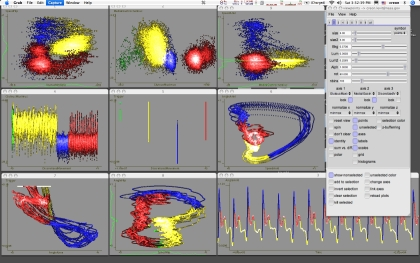
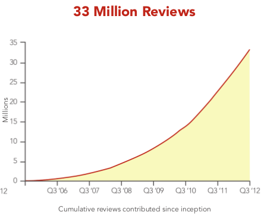
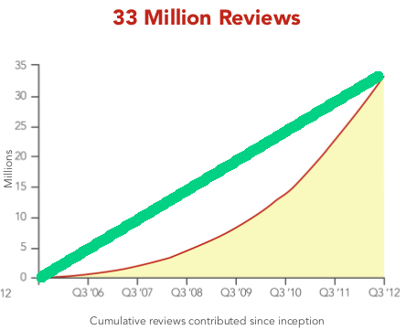
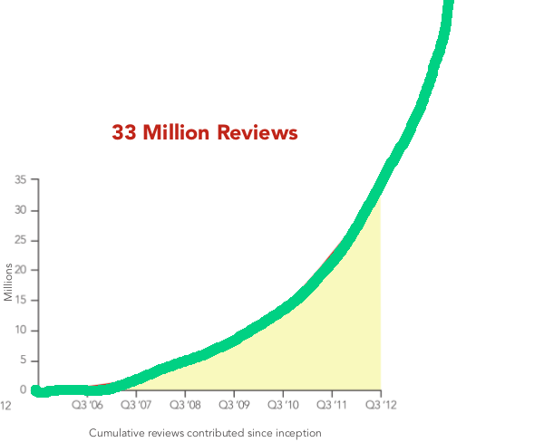
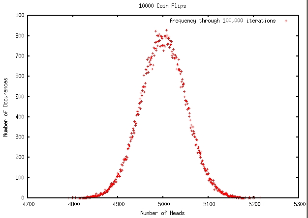

Data
Table of Contents
1 Data
2 The Web is Used by Humans two_col
- Tool used to improve the lives of users
- How to improve the tools we have?
- Understand their use and their users
3 Understanding
- Collect
- Interperate
- Understand
3.1 Path to Understanding notes
- Collect data on the tool's usage: what features are used, what time of day, for what purpose?
- Collect data on the user: ultimate goal, knowledge of problem space
- Find patterns, develop a story
- Have a mental model of who your users are and why they are using your tool
- This is the way the brain works in general: build a mental model of the world around you so you can anticipate how things will work out
4 Big Data
- Never easier to collect data
- Advanced analytics tools available
- Financial incentives for understanding
4.1 Modern World notes
- Positive feedback: more people use web tools, more data we collect, better understand them, better tools, more people use the tools
- Always need to keep in mind user's end goal though (hint: it is not using your product)
- Big Data means doing this a lot
- Netflix prize: $1MM for 10% improvement
5 Terminology
- Data
- Raw facts, represented in some way
- Information
- Interperated data with meaning
- Knowledge
- Information used to achieve some purpose
5.1 Philosiphical notes
- General idea is that there are different levels of abstraction for these concepts
- No hard boundaries
5.2 Phonographic Records two_col
- Data
- Grooves in the record material
- Information
- Sound heard by a human
- Knowledge
- Enjoyment of a song
5.3 Notes notes
- Generally know how records work?
- Grooves cut into vinyl, needle moves over them, sound comes out
- image source: http://www.absurdintellectual.com/2009/04/17/celebrate-record-store-day-saturday-april-18/
5.4 Web logs
- Data
- Records of visits to a web page
- Information
- Summary of user behavior
- Knowledge
- Understanding shortcoming in a product
5.5 Storage notes
- Data is just 1s 0s on a digital machine
- At a slightly higher level, data is still just characters in a file
- Meaning extracted by a human, to get a bigger picture
- Knowledge is having that mental model of typical user behavior and applying it to a purpose
- Similarity to 5 Whys?
6 Web Frontier
- Web particularly well suited to analysis
- Easiest to instrument
- Already requires high technology
6.1 Alternatives notes
- Medicine, global warming, education may be more "worthy"
- Because you must interact with central server, each interaction can be logged
- How do you log health history? How many cigarets are being smoked? How many hours of exercise happen?
- Already have programmers building the website, now can put them to use building analysis tools or data infrastructure
7 Taxonomy of Data Science two_col
- Obtain
- Scrub
- Explore
- Model
- iNterpret
7.1 Mason & Wiggins notes
- Reading in which Hilary Mason and Chris Wiggens explain their interpretation of data science
- These are not absolute steps
- When I taught Data Mining last semester, the book had a different set of steps
- OSEMN
- Mason Chief Scientist at Bit.ly, many good talks
- image source: http://www.hilarymason.com/about/
8 Obtain
- Where to get the data?
- Services
- Datasets
8.1 Examples notes
- Even for web, what do you do with the logs across many web servers?
- How to translate data in logs to information?
- Services eg: github
- Dataset eg: homework (microsoft weblogs)
8.2 Common Log Format
127.0.0.1 user-identifier frank [10/Oct/2000:13:55:36 -0700] ...
"GET /apache_pb.gif HTTP/1.0" 200 2326
- host ident authuser date
- request status bytes
- What are the trade-offs with this format?
8.3 JSON Alternative
127.0.0.1 user-identifier frank [10/Oct/2000:13:55:36 -0700] ...
"GET /apache_pb.gif HTTP/1.0" 200 2326
{'host': '127.0.0.1',
'ident': 'user-identifier',
'authuser': 'frank',
'date': '10/Oct/2000:13:55:36 -0700',
'request': 'GET /apache_pb.gif HTTP/1.0',
'status': 200,
'bytes': 2326}
8.3.1 Trade-offs notes
- Developed at a time when logs were used operationally
- "Easy" to parse, but not standardized with other areas
- Hard to extend customize
9 Scrub
- Reconcile inconsistencies:
- Webserver has the wrong time
- Determine type of page
- Changed logging method
9.1 Consistency notes
- Make sure all activity happening in correct time zone
- If a server had the wrong internal time, add error to logs
- Bug in timezone handling
- Hypothertically interested in learning the type of resource downloaded
- 'gif|png|jpg' => image
- 'pdf|doc|xls' => document
- used to encode encrypted user\id, now decrypted
- even different teams might log user\id in different ways
10 Explore two_col
- Don't under estimate scrolling through data
- Start simple: scatter plots, histograms
- Find correlations

10.1 Viewpoints notes
- An example program that can plot multi-dimensional records
- But don't do this advanced stuff first!
- Just take a look at the data, get a feel for all the variables
- Are mostly bots hitting your page?
- What are the unusual patterns?
11 Models two_col
- Mathimatical description of a phenomena
- Main focus of Machine Learning (to some extent Data Mining)
- Generally, best models are most accurate

11.1 Example notes
- Take the rate of reviews
- How do you mathmatically describe the behavior?
- image source: Yelp Factsheet http://yelp.com/press
11.2 Lines

- How well does this fit the data?
11.2.1 Equation notes
- How to express mathmatically?
- y = mx + b
11.3 Exponential

- Fit better? How far do we go?
11.3.1 Equation notes
- How to express mathmatically?
- y = mx2 + b
11.4 Coin Flip

- Coin flips modeled as binomial distribution
11.5 Source notes
- How to express mathmatically?
11.6 Classification Model

- Which of these lines best separates the data?
11.6.1 Model notes
- Model for how data is distributed into groups, or classes
12 Interpret
- Business model is working
- What to bet on a coin flip
- The characteristics of successful customers
12.1 Apply the information to your domain notes
- Will you run out of money?
- What's the likelyhood a customer will stay with you next year?
13 Analyzing the Real World
- How would you gain knowledge of rain forest data?
- Obtain
- Scrub
- Explore
- Model
- Interpret
13.1 Steps notes
- Place temperature recorders all over
- Try to normalize by how long they were in the sun, or an animal sat on them
- Just scroll through temperatures for a day, then plot on a map
- Develop estimates on daily temperature (perhaps double sin wave?)
- Temperature fluxuates less in some areas that are associated with a plant